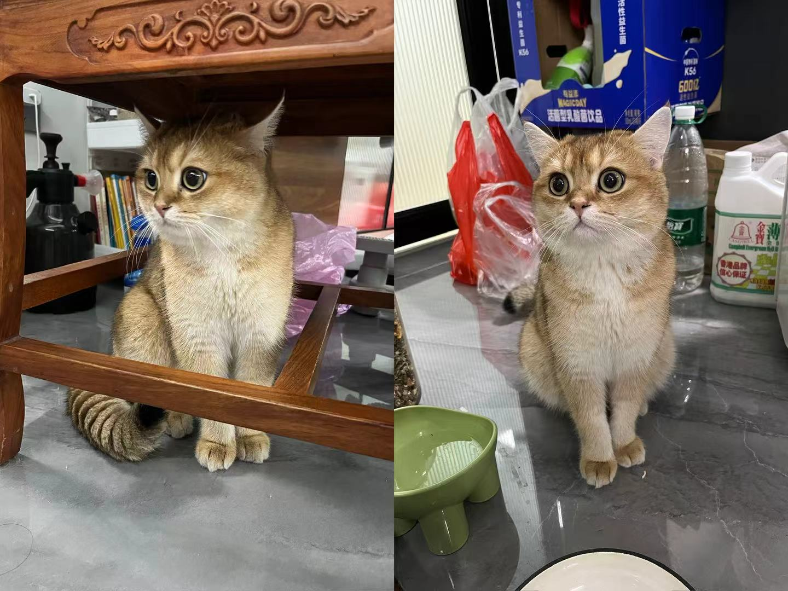
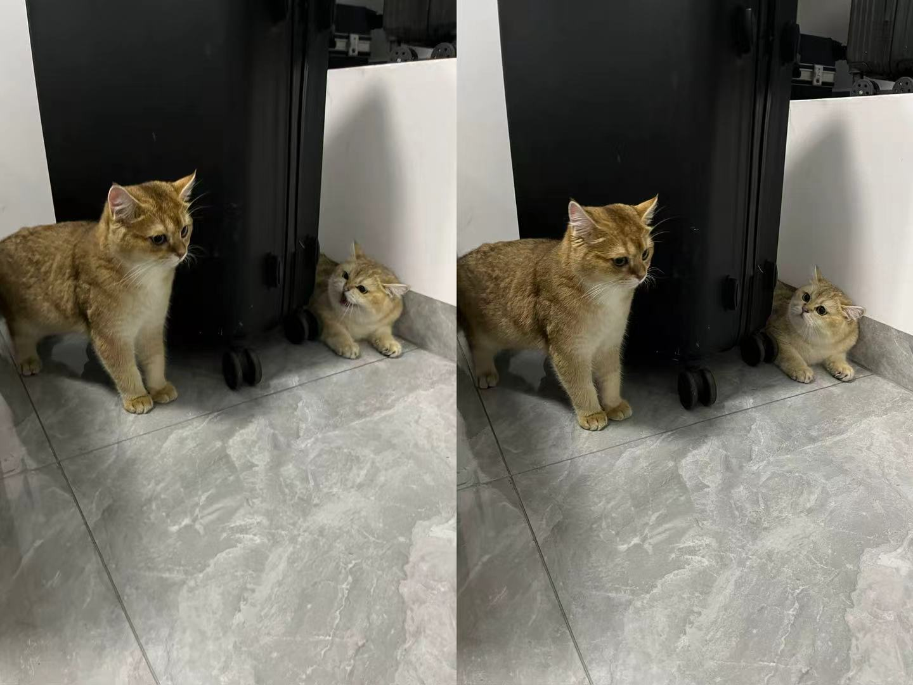

认识福元
可爱的福元
福元 (Fúyuán) 是于2024年诞生的一只金黄色的金渐层猫咪，最引人注目的特征是他天生带着一副宛如永远睡不醒的慵懒神情。
福元的名字来源于中文“福气”的“福”和“元宝”的“元”的组合，寓意着他既是带来幸福的小福星，也是招财进宝的吉祥物。
福元性格温顺、懒散，最喜欢的事情是睡觉，品尝各种美味的猫咪冻干，以及在家中进行缓慢的探险。他的生日是11月20日，最喜欢的食物当然是冻干啦


福元的朋友们
福元有一个温暖的小朋友圈，包括它的家人，妹妹，以及其他可爱的动物朋友。
福元和它的朋友们经常一起玩耍，发生了许多有趣的故事。它们之间的友谊温暖而真挚，教会我们珍惜身边的朋友。
旁边的图中是福元和它的女朋友团团，也是一只金黄的金渐层小猫。